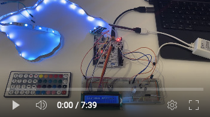

- Generated by
 1.9.6
1.9.6
|
Retina: recepción y transmisión de infrarrojos
|
El proyecto RETINA consiste en un controlador por infrarrojo para enviar y recibir señales de esta naturaleza. Se dispone de controles mediante botones y un controlador de voz para emplear con luces LED RGB, aunque puede ser extendido a cualquier dispositivo que acepte esta comunicación. Además, se puede conectar un panel LCD para disponer de trazas (la flag LCD_CONNECTED debe ser activada en el retina.h)
Este proyecto dispone de dos versiones:
Puedes acceder al vídeo del demostrador del proyecto pinchando en la imagen:

Demostrador del proyecto Retina y ConVoice
Incluya la carpeta retina-main en la carpeta sdg. Esta carpeta incluye los drivers necesarios para la ejecución del sistema. Cabe recalcar que para utilizar la STM32F411-DISCO hace falta añadir otra carpeta con los drivers extra necesarios.
Dispone de toda la API generada mediante doxygen con el archivo index.html.
El sistema puede correr en varias configuraciones mediante la modificación de ciertas variables ubicadas en las cabeceras. Existe un ajuste global, el control de la pantalla LCD, está se puede habilitar o desahibilitar poniendo a true/false la variable LCD_CONNECTED del fichero retina.h. El resto de ajustes dependen del harware utilizado:
En esta placa están disponibles dos principales versiones, que se alternan variando la variable VERSION del fichero retina.h:
Version 5: En esta versión se disponen todas la mejoras del sistema. Se amplía el mando, ofreciendo la posibilidad de conectar varios botones configurables. Por defecto el sistema tiene tres botones (variable NUMBER_BUTTONS en el fichero fsm_retina_v2.h): el primero es el botón de encendido del sistema, el segundo es el botón de cambio de mando y cambio de modo, y el resto son botones de función configurables. Como se ha mencionado, esta versión dispone de la posibilidad de grabar hasta 5 mandos (aumentable si fuese necesario). Estos mandos pueden ser configurados por software o grabados mediante la función receptora.
Para grabar un mando con el modo recepción se ha de seguir los siguientes pasos:
Warning
Cuando se quiera utilizar esta placa, la variable PICOVOICE_ACTIVE debe estar a false
Con esta placa, además de todo lo anterior, se puede activar el sistema de control por voz. Es importante recalcar que estos sistemas son incompatibles, es decir, no es posible disponer del mando con botones y del control por voz simultáneamente. Para configurar el sistema solo hace falta poner la variable PICOVOICE_ACTIVE = true en el archivo retina.h.
La placa puede ser configurada para utilizar cualquier comando por voz, las instrucciones detalladas se encuentran en Picovoice Instructions.
En esta versión viene un modelo de lenguaje con los siguientes comandos:
Note
Por defecto si no se le dice que luz quieres cambiar el programa usará el transmisor infrarrojo para realizar el comando.